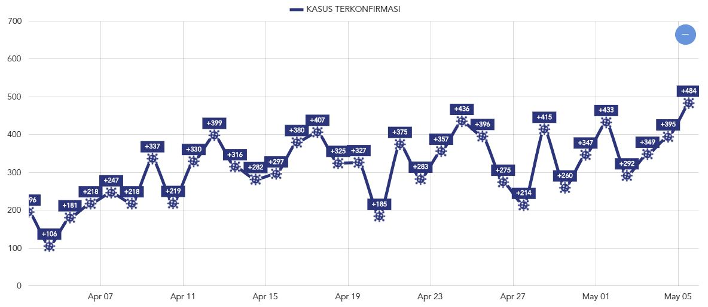

Perkembangan Kasus
Terkonfirmasi Positif Covid-19 Per-Hari

Virus Corona
(Sars-CoV-2) di Bali
Dunia kini telah dibuat heboh dengan kemunculan Virus Corona yang juga telah mencapai Indonesia dan Bali. Kami akan memposting beberapa artikel di website & sosial media guna memberikan informasi terbaru terkait perkembangan dan situasi korona di Bali serta berharap semua wisatawan dan warga Bali tetap aman. Pemerintah Indonesia sangat aktif dalam mengelola situasi dan terus mengambil tindakan untuk menghentikan penyebaran penyakit lebih lanjut. Ada beberapa hal sederhana yang dapat kita lakukan untuk menghindari infeksi Covid-19 dan untuk menghindari penyebaran penyakit lebih lanjut:
Fakta Seputar Virus Corona vs Mitos dari WHO
Tindakan Pencegahan Corona
Apakah boleh bepergian ke Bali?
Ini sangat tergantung pada keadaan pribadi Anda.
Jika Anda berusia lanjut atau memiliki kondisi kesehatan yang mendasarinya, Anda harus mempertimbangkan dengan cermat jika Anda ingin tetap bepergian.
Untuk saat ini perbatasan masih terbuka dan jumlah pasien korona sangat rendah. Risiko untuk terinfeksi mungkin lebih rendah jika dibandingkan beberapa negara lain yang berisiko tinggi, seperti Cina atau Italia.
Ada wacana bahwa pembatasan perjalanan lebih lanjut mungkin akan diberlakukan, tergantung pada bagaimana situasi di Indonesia. Pembatasan perjalanan tentu saja dapat mempengaruhi rencana perjalanan Anda, oleh sebab itu pastikan Anda selalu mengupdate berita seputar larangan berkunjung di website kami.
Banyak turis masih tetap berdatangan ke Bali, walaupun kini sedikit lebih tenang dari biasanya. Beberapa agenda konser, acara, dan festival yang lebih besar bisa jadi juga dibatalkan jika situasi kurang memungkinkan.